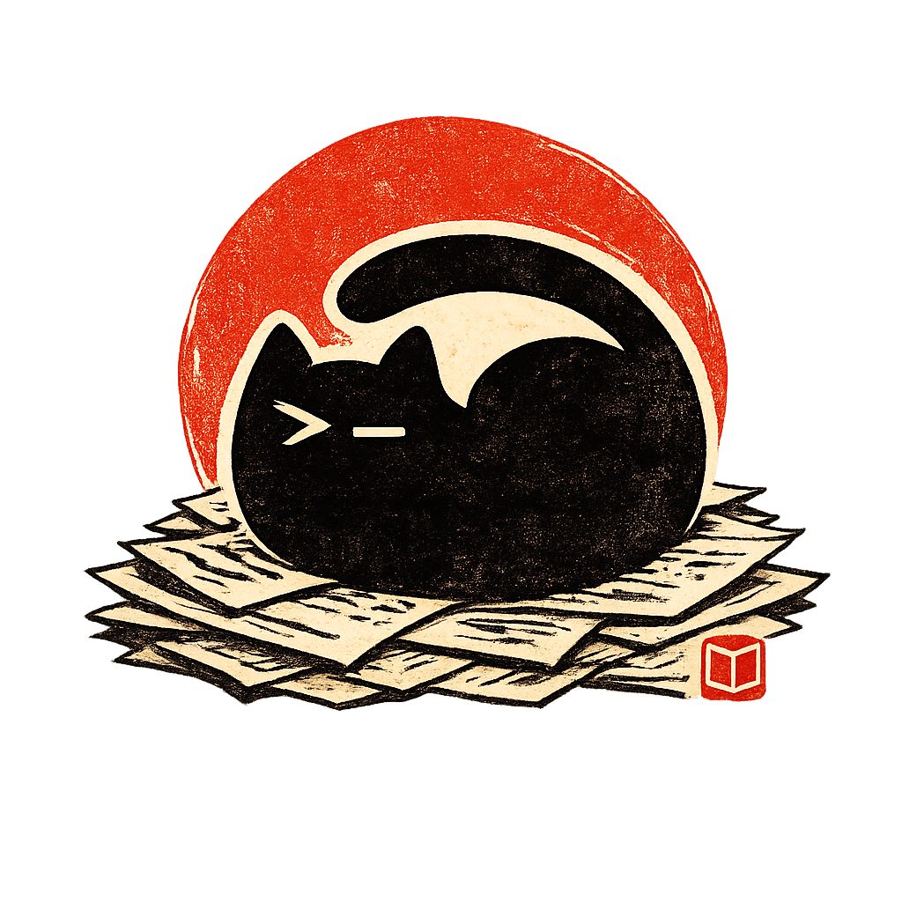

Image
The image component embeds an image in your document. You can point to image files stored within the project, or an external URL.
Checkout the Markdown Guide for more details on configuring images.
Basic syntax
To add an image to your document, a similar syntax to links is used but prefixed with an exclamation mark !.


Optional caption
An optional caption below the image can be set by adding your caption text between the [] brackets. The following sample demonstrates adding a caption:

Optional title
An optional title attribute for the resulting HTML <img> element can be set by adding the title text after the link. The title can be used differently within different browsers, but is typically shown as a tooltip when mouse pointer is held over the image. The following sample demonstrates adding a title:

Hold your mouse pointer over the image to see the title.
Links
By default, images are not links, but it's easy to make your image into a link by just wrapping the image in a link.
You can link to an external (see outbound) location or any page within your project.
The following demonstrates adding an outbound link to an image:
[](https://example.com)
The following demonstrates adding an outbound link to another page:
[](/guides/getting-started.md)
Dimensions
You can control the size of your images by specifying custom dimensions using the pipe | separator followed by width and/or height values.
Setting width and height
To set both width and height, use the format widthxheight after the pipe separator:

Setting width only
To set only the width, specify a single number after the pipe separator. The image will automatically scale its height to maintain the original aspect ratio:

The dimensions are specified in pixels. For best results, use values that maintain the image's original aspect ratio to prevent distortion.
Generic Attributes
Neko allows you to add custom HTML attributes to your images using a simple curly brace syntax {}. This powerful feature lets you customize the appearance and behavior of your images beyond basic Markdown capabilities.
Custom id
Add a unique identifier to your image for styling or JavaScript targeting. The id attribute is prefixed with a # symbol.
{#custom-id}
// Creates the following HTML
<img src="neko-logo.png" id="custom-id">
Custom CSS class
Apply CSS classes to your image for styling. Class names are prefixed with a . dot. You can add multiple classes by separating them with spaces.
{.rounded-lg}
// Creates the following HTML
<img src="neko-logo.png" class="rounded-lg">
Custom width or height
Set specific dimensions for your image using the width and height attributes. Values can be specified in pixels (px) or other CSS units. You can also set min-width, max-width, min-height, and max-height directly using standard CSS units, which will be converted to inline styles.
{width="300" height="200" max-height="100px"}
// Creates the following HTML
<img src="neko-logo.png" width="300" height="200" style="max-height: 100px">
Custom CSS class and width
Combine CSS classes with specific dimensions to create perfectly styled images.
{.rounded-lg width="300"}
// Creates the following HTML
<img src="neko-logo.png" class="rounded-lg" width="300">
Custom data attributes
Add custom data attributes to your images for JavaScript functionality or additional metadata. Data attributes are created using the data-* naming convention.
{data-location="Korea"}
// Creates the following HTML
<img src="neko-logo.png" data-location="Korea" />
You can combine multiple attributes in a single set of curly braces. For example: {.rounded-lg width="300" data-location="Korea"}.
Alignment options
If an image is configured on a separate line, Neko includes extra functionality for the custom alignment of images on the page. For instance, you can specify the left or right alignment of an image and have the text flow around the image. Check out the Image alignment demo.
If an image is defined inline with other text on the same line, the image will be treated as an inline image and the following Neko alignment options will be ignored.
An additional plus option for Blog pages or pages with layout: central will help to position the image slightly overlapping the left or right content margins.
| Position | Markdown | Description |
|---|---|---|
center |
 |
Center aligned in its container (default) |
left |
- |
Float left aligned |
leftplus |
-- |
Float left aligned with some negative left offset |
right |
- |
Float right aligned |
rightplus |
-- |
Float right aligned with some negative right offset |
centerplus |
---- |
Center aligned plus negative offset both sides |
Check out the following sample page demonstrating all the image alignment scenarios, including plus options:
The plus alignment options only apply when the page is layout: central or layout: blog.
For default page layouts with a left navigation and/or the right table of contents, the plus positions will fallback to their non-plus equivalents. For instance, rightplus will fallback to right and the centerplus will fallback to center.
Photo credits to carlos aranda.